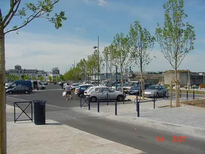
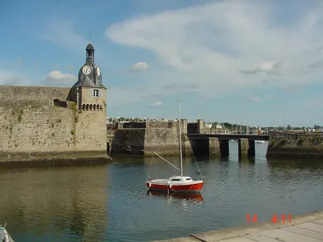
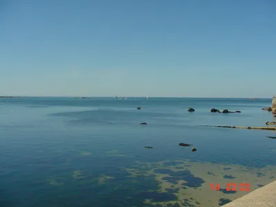
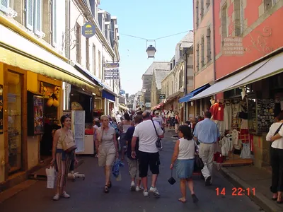
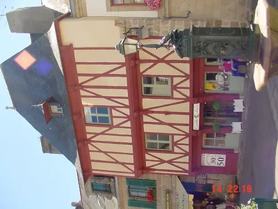
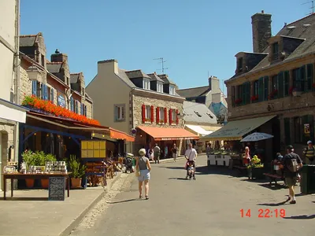
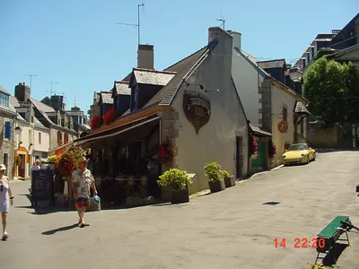

Concarneau
← Back to UK to the MediterraneanWelcome to Concarneau
Our next port of call was the wonderful little town of Concarneau.











Our next port of call was the wonderful little town of Concarneau.






